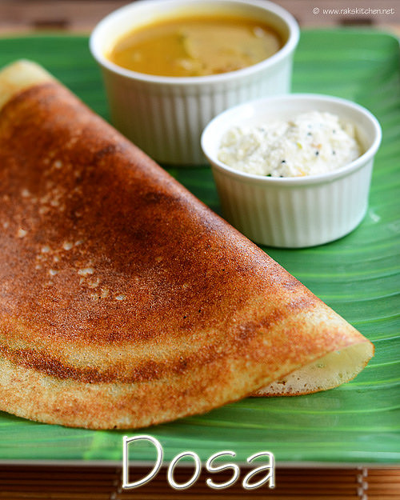

Dosa is a popular South Indian crepe made from a fermented batter of rice and lentils, resulting in a thin, crispy, and savory pancake with a slightly tangy flavor. It's served plain or stuffed with fillings like spiced potatoes (masala dosa) and accompanied by chutneys and sambar. The texture can range from lacy and crisp to soft and spongy, depending on the batter and preparation, and it's enjoyed for breakfast, as a snack, or as a meal.
To make traditional South Indian dosa (crispy rice crepes) , you need to prepare a fermented batter for the crepes.
Wash the rice and lentils separately until the water runs clear. Soak the rice in a large bowl with plenty of water. In a separate bowl, soak the urad dal and fenugreek seeds together. Let both soak for 4 to 6 hours
Drain the soaking water. Blend the urad dal and fenugreek seeds first with a little ice-cold water until the mixture turns thick, fluffy, and smooth. Pour it into a large pot. Next, blend the rice with just enough water to create a smooth, slightly grainy paste. Mix both batters together thoroughly in the pot using your hands.
Cover the pot with a loose lid. Place it in a warm, dark spot for 8 to 12 hours. The batter is ready when it doubles in volume, smells slightly sour, and looks frothy. Stir in the salt gently just before cooking.
Heat a flat, non-stick cast-iron griddle (tawa) over medium heat. Splash a few drops of water to check the heat; it should sizzle and evaporate instantly. Wipe the pan clean. Pour a ladleful of batter in the absolute center. Quickly grease and spread the batter outward in a tight spiral motion to form a thin, wide circle.
Drizzle half a teaspoon of ghee or oil around the edges and over the top. Cook for 2 to 3 minutes until the edges begin to lift and the bottom turns a deep golden brown. Fold the dosa in half or roll it into a cylinder, then serve immediately while hot.